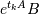

scipy.sparse.linalg.expm_multiply¶
- scipy.sparse.linalg.expm_multiply(A, B, start=None, stop=None, num=None, endpoint=None)[source]¶
Compute the action of the matrix exponential of A on B.
Parameters : A : transposable linear operator
The operator whose exponential is of interest.
B : ndarray
The matrix or vector to be multiplied by the matrix exponential of A.
start : scalar, optional
The starting time point of the sequence.
stop : scalar, optional
The end time point of the sequence, unless endpoint is set to False. In that case, the sequence consists of all but the last of num + 1 evenly spaced time points, so that stop is excluded. Note that the step size changes when endpoint is False.
num : int, optional
Number of time points to use.
endpoint : bool, optional
If True, stop is the last time point. Otherwise, it is not included.
Returns : expm_A_B : ndarray
The result of the action .
Notes
The optional arguments defining the sequence of evenly spaced time points are compatible with the arguments of numpy.linspace.
The output ndarray shape is somewhat complicated so I explain it here. The ndim of the output could be either 1, 2, or 3. It would be 1 if you are computing the expm action on a single vector at a single time point. It would be 2 if you are computing the expm action on a vector at multiple time points, or if you are computing the expm action on a matrix at a single time point. It would be 3 if you want the action on a matrix with multiple columns at multiple time points. If multiple time points are requested, expm_A_B[0] will always be the action of the expm at the first time point, regardless of whether the action is on a vector or a matrix.
References
[R18] Awad H. Al-Mohy and Nicholas J. Higham (2011) “Computing the Action of the Matrix Exponential, with an Application to Exponential Integrators.” SIAM Journal on Scientific Computing, 33 (2). pp. 488-511. ISSN 1064-8275 http://eprints.ma.man.ac.uk/1591/ [R19] Nicholas J. Higham and Awad H. Al-Mohy (2010) “Computing Matrix Functions.” Acta Numerica, 19. 159-208. ISSN 0962-4929 http://eprints.ma.man.ac.uk/1451/